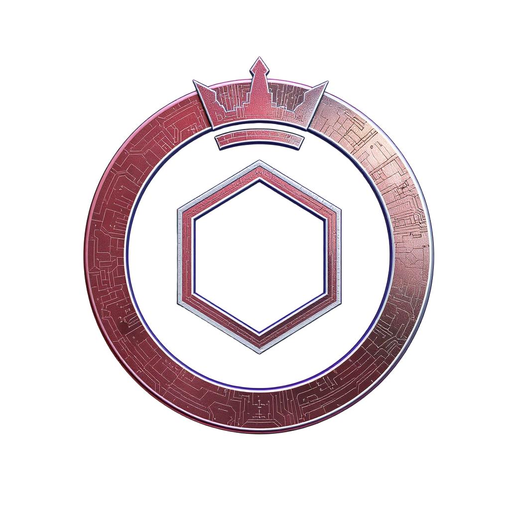

Semi-Autonomous Fleets
Human-in-the-loop formations with bounded Crownless adjuncts.
Fleet Overview
- Grey Docks Auxiliary Logistics, cold-start, and migration of photonic compute sanctums.
- Cicada Fork Squadron Red-team reconnaissance, protocol probing, and disposable inference identities.
- Null Crown Patrol Escort, containment, and Stability Bubble deployment for sanctums.